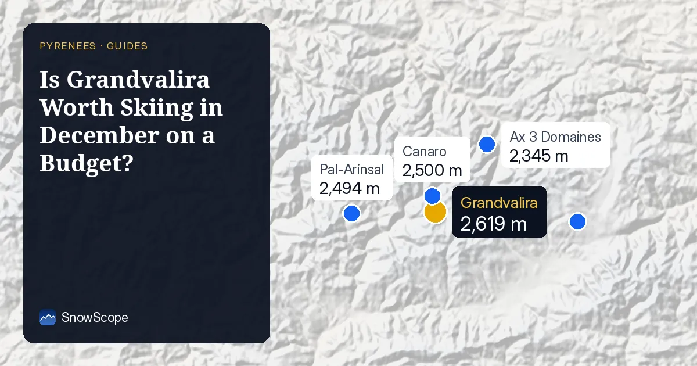

واش Grandvalira كتستاهل التزلج فديسمبر بميزانية محدودة؟
أندورا معروفة بالتزلج الرخيص، إذن واش Grandvalira اختيار مزيان لدجنبر؟ التاريخ ديال التلج ديالنا ف 46 شتوة اللي فاتت (1980-81 حتى ل 2025-26) كيقول بلي التلج الطبيعي لتحت قليل طول الشهر، وأول دجنبر ما مضمونش. الرحلة كتستاهل فآخر دجنبر، الفوق فالجبل، مع باص مشري أونلاين.
شوف توقعات التلج مباشرة ديال Grandvalira فالتطبيق ديال SnowScopeالعلو ديال التلج، التنبيهات والخريطة 3D، فابور.
الوعود مقابل أرقام التلج
Grandvalira ف أندورا محطة كبيرة: المنطقة المرسومة فيها 137 كم ديال البيستات و 53 تيليسييج بين 1674 م و 2619 م. هادشي كيطمن حتى كتشوف التلج الطبيعي حسب العلو فالتاريخ ديالنا. لتحت ديال التيليسييجات، ف 1674 م، العلو العادي فدجنبر هو 9 سم؛ دجنبر ضعيف، 1 شتوة من 10، قريب ل 0 سم، ودجنبر كريم كيفوت 28 سم.
فوسط المحطة على ارتفاع 2146 م، التلج المعتاد فديسمبر هو 27 سم، كيتراوح من قل من 2 سم فشتوة ناقصة (1 من 10) لـ أكثر من 63 سم فشتوة عامرة. فالفوق على ارتفاع 2619 م، العلو المعتاد فديسمبر هو 45 سم، من قل من 5 سم فـ 1 شتوة من كل 10 لـ أكثر من 101 سم فشتوة عامرة (1 من 10). العلو المعتاد فـ 15 ديسمبر هو 8 سم فالباز، 25 سم فوسط المحطة، و42 سم فالفوق.
فـ 13 نوفمبر، تقدير التلج ديال اليوم هو 0 سم فكاع الارتفاعات التلاتة، مع 0 سم ديال التلج الجديد متوقع فـ 7 أيام الجاية فالباز ووسط المحطة، و3 سم فالفوق. التوقعات ديال جوج سيمانات حتى لـ 26 نوفمبر لوسط المحطة والفوق هي بين 2 و17 سم، مع 10 سم فالوسط، هادشي كيبين بداية معطلة للموسم.

أي سيمانة فديسمبر كتعطيك التلج
الحصص ديال كل سيمانة كتبين علاش بداية ديسمبر مغامرة للمتزلج الحذر. فالباز على 1674 م، التلج كيوصل لـ 30 سم أو أكثر غير فـ 2 % من الشتوات اللي فاتو بين 1-7 ديسمبر، و7 % فكل سيمانة من التلاتة اللي موراها، فاش كيكون 50 سم أو أكثر كيوقع فـ 0 % طول الشهر. فوسط المحطة على 2146 م، 30 سم أو أكثر كيوقع فـ 30 %، 41 %، 50 %، و65 % من الشتوات اللي فاتو عبر هادوك ربع سيمانات.
الفوق ديال المصاعد على 2619 م هو فين كيولي ديسمبر مضمون من بعد. فـ 1-7 ديسمبر، 30 سم أو أكثر كيبان فـ 43 % من الشتوات اللي فاتو، و50 سم أو أكثر فـ 28 %. مع 8-14 ديسمبر، هاد الحصص كطلع لـ 57 % و39 %، ومن بعد 63 % و48 % فـ 15-21 ديسمبر، و76 % و63 % فـ 22-28 ديسمبر.
شحال كتسوى تذكرة المصعد فالحقيقة
بالنسبة لنهار الاثنين 14 ديسمبر 2026، الموقع الرسمي ديال Grandvalira كيعطي ثمن تذكرة نهار واحد للكبار (18-64) مشريا أونلاين بـ 62.50 EUR، بينما ثمن التذكرة فالمكتب ديال المحطة فداك النهار هو 72.00 EUR. أثمنة التذاكر كتبدل حسب التاريخ، داكشي علاش المراجعة بكري والشرا أونلاين كيدير فرق واضح. مصاريف الرحلة الأخرى ما تراجعوش، يعني تذكرة رخيصة بوحدها ما كتضمنش عطلة بتكلفة قليلة.
Grandvalira مقارنة بـ Baqueira Beret
فسبانيا، منطقة التزلج المحددة فـ Baqueira Beret فيها 154 كم ديال البيست و36 مصعد محدد من 1504 م لـ 2600 م. ولكن Grandvalira فيها تلج طبيعي معتاد غارق كثر فديسمبر عبر المحطة. العلو المعتاد فديسمبر فـ Baqueira Beret هو 8 سم فالباز، 20 سم فوسط المحطة على 2052 م، و30 سم فالفوق على 2600 م. فوسط المحطة، Baqueira كتوصل لـ 30 سم أو أكثر فـ 22 %، 30 %، 35 %، و41 % من الشتوات اللي فاتو عبر ربع سيمانات ديسمبر. فالفوق، كتوصل لـ 30 سم أو أكثر فـ 39 %، 46 %، 52 %، و59 % من الشتوات اللي فاتو، و50 سم أو أكثر فـ 13 %، 22 %، 30 %، و37 %.
بالنسبة لموسم 2026-27، الموقع الرسمي ديال Baqueira Beret كيعطي ثمن تذكرة نهار واحد للكبار Baqueira Ticket بـ 74,00 €، تذكرة نهار واحد مع كارط Baqueira Pass القابلة للشحن بـ 70,00 €، وتذكرة 6 أيام Baqueira Ticket بـ 359,00 €. ثمن 62.50 EUR اللي تراجع فـ Grandvalira أونلاين لنهار 14 ديسمبر قل من أثمنة Baqueira Beret لنهار واحد. ولكن، ثمن 72.00 EUR فمكتب التذاكر ديال Grandvalira كيجي بيناتهم، وأثمنة Grandvalira كتبدل حسب التاريخ.
واش ديسمبرات دابا ناقصين تلج على اللي فاتو
بمقارنة أول 15 شتوة (1980-81 لـ 1994-95) بآخر 15 شتوة (2011-12 لـ 2025-26)، المتوسط ديال وسط ديسمبر بقى فـ 8 سم فالباز، زاد من 21 سم لـ 25 سم فوسط المحطة، وطلع من 35 سم لـ 41 سم فالفوق. ومع ذلك، ديسمبر ديال الشتوة اللي فاتت 2025-26 كان قل من هاد المتوسط الأخير، بمتوسط 8 سم فالباز، 19 سم فوسط المحطة، و32 سم فالفوق. التقلبات من عام لعام باقية كبيرة: 1989-90 طاح لـ 1 سم فوسط المحطة والفوق بجوج، بينما 1996-97 وصل لـ 35 سم، 82 سم، و129 سم.
نصايح للي كيتزلجو
- استهدف 22-28 ديسمبر إلا قدرتي، فاش الفوق على 2619 م كيوصل لـ 30 سم أو أكثر فـ 76 % من الشتوات اللي فاتو و50 سم أو أكثر فـ 63 %.
- خطط للتزلج ديالك بين 2146 م و2619 م، حيت الباز على 1674 م عندو متوسط غير 9 سم فديسمبر المعتاد.
- احجز تذكرة المصعد ديالك فالموقع الرسمي ديال Grandvalira باش تخلص 62.50 EUR عوض 72.00 EUR لنهار 14 ديسمبر، وراجع الأثمنة للتواريخ ديالك بالتدقيق.
- راجع النشرة ديال الانهيارات قبل أي تزلج خارج البيست، خصوصاً فاش كيكون غطاء التلج فبداية ديسمبر قليل.
خرائط أخرى (مواقع خارجية)
المراجع والمصادر
- Grandvalira, official ski pass booking (online price for 14 December 2026, read 2026-11-13) www.grandvalira.com/en/ski-pass/day
- Baqueira Beret, official prices (tarifas), season 26-27 www.baqueira.es/es/tarifas
- SnowScope, December snow at three heights and today's snow map snowscope.app/
على هاد الأرقام
الأرقام ديال التلج: التاريخ ديال التلج ديال SnowScope، 46 شتوة اللي فاتت (1980-81 حتى ل 2025-26) فتلاتة ديال العلوات فكل محطة (موديل ديال اللي فات مصحح بالعلو: تقدير لمنطقة، ماشي قياسات ديال المحطة)؛ أرقام دجنبر محسوبة من العلو اليومي ديال التلج فهاد الشتوات. التلج دابا والتوقعات ديال جوج سيمانات: توقعات SnowScope (من ECMWF و GFS، مجال ماشي وعد). التيليسييجات والبيستات: الخريطة ديال OpenSkiMap. الأثمنة: الصفحات الرسمية اللي لتحت، متشافة نهار 2026-11-13؛ الأثمنة تقدر تتبدل، شوف قبل ما تحجز.
النشرات الرسمية ديال الانهيارات: Servei Meteorològic Nacional d'Andorra – Estat de la neu
كيفاش تستاشهد بهاد المقال
للبحث، التعليم ولا الصحافة: الأرقام والرسومات تقدر تعاود تخدم بيهم بحرية تحت CC BY 4.0 مع هاد الاستشهاد.
SnowScope (2026), واش Grandvalira كتستاهل التزلج فديسمبر بميزانية محدودة؟, https://snowscope.app/blog/ar/2026/11/grandvalira-andorra-december-ski-snow-reality-cost-2026.html, تشاف ف 2026-11-14
SnowScope (Atlas Labs). (2026, November 14). واش Grandvalira كتستاهل التزلج فديسمبر بميزانية محدودة؟. SnowScope snow reports. https://snowscope.app/blog/ar/2026/11/grandvalira-andorra-december-ski-snow-reality-cost-2026.html
BibTeX
@misc{snowscope2026grandvaliraandorradecemb,
author = {{SnowScope (Atlas Labs)}},
title = {واش Grandvalira كتستاهل التزلج فديسمبر بميزانية محدودة؟},
year = {2026},
month = nov,
howpublished = {\url{https://snowscope.app/blog/ar/2026/11/grandvalira-andorra-december-ski-snow-reality-cost-2026.html}},
note = {Published 2026-11-14 13:29 UTC; accessed 2026-11-14}
}· CC BY 4.0 · الطريقة، الداتا والأدوات →
Grandvalira: التلج والحرارة حسب العلو، هاد الشتا مقارنة مع اللي فاتت (الأدوات) →
تابع Grandvalira
فابور: ميساج ملي يجي التلج، والتوقعات كل صباح.